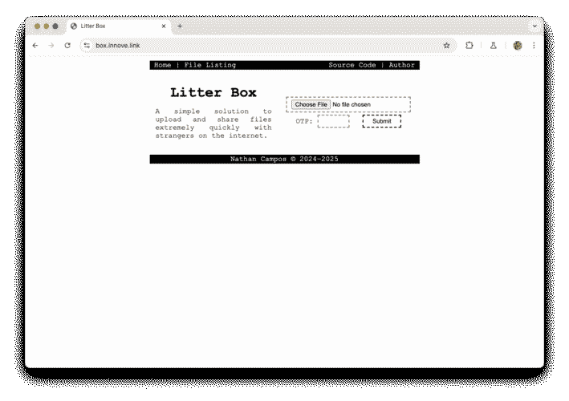
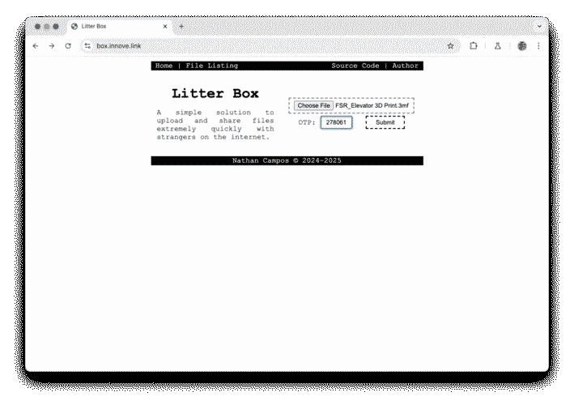
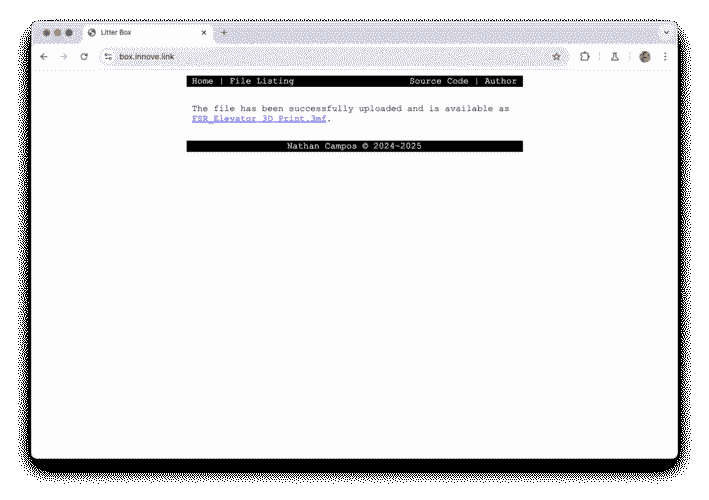

A simple solution to upload and share files extremely quickly with strangers on the internet, no matter if you, or your strangers, are using ancient browsers from the nineties.
The goal of this project is to provide a quick and super simple solution that allows you, and only you, to upload files to a server you control and make them available on the internet for other people. Think of it as a public Google Drive folder that's self hosted and can be used with ancient browsers.
This project can, and by its own design and goal, should be exposed to the public internet. All your uploads will by default be public, but uploading new content requires the usage of a TOTP, so you are protected against random people uploading things to your server.
|
 Home page of the application
|
 Home page with every field populated
|
 Successful upload page
|
If this project seems like the sort of thing that floats your boat, getting it up and running is extremely simple, and only requires two steps, all thanks to the magic of Docker.
First you should create a docker-compose.yml file with
the following contents:
---
services:
app:
image: 'ghcr.io/nathanpc/litterbox:main'
restart: unless-stopped
ports:
- '8001:80'
volumes:
- ./uploads:/app/u
environment:
TOTP_SECRET: 'changeme'
This will pull the image from the registry and expose the service on
port 8001. It will also setup a volume where the
uploaded files will be stored. You should change the
TOTP_SECRET environment variable to something a bit
more secure, since this will be the key used to generate your
one-time passwords.
And after running docker compose up -d you should have
the system up and running. The next step is to get the
base32-encoded secret key for your TOTP application. To do so simply
execute the following command:
docker compose exec app php /app/totp.php